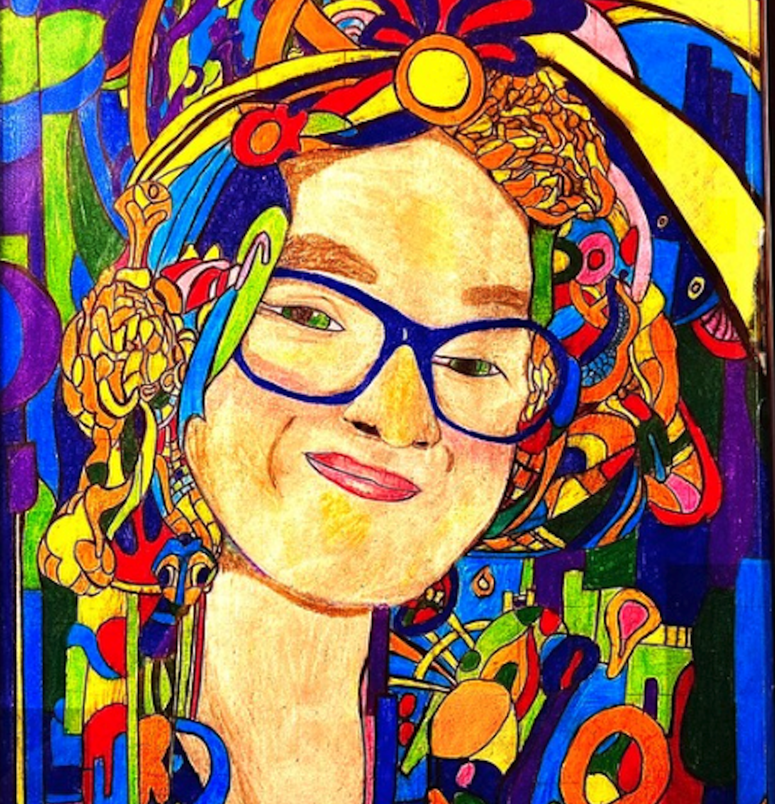

Piece 2
This piece was made for my sustained investigation portrait drawing where the music genre’s I focused on were latin and jazz. The drawing is of my girlfriend and is very lively and colorful just like her. Some of the places I looked to for inspiration were the art deco and jazz styles of the 20's the blocky structures on the outside of the piece and the distant cityscapes capture the period well. The orange and yellow flowers making up the structure of her hair are marigolds, an important flower in latin culture and it fit the latin inspirations of the piece